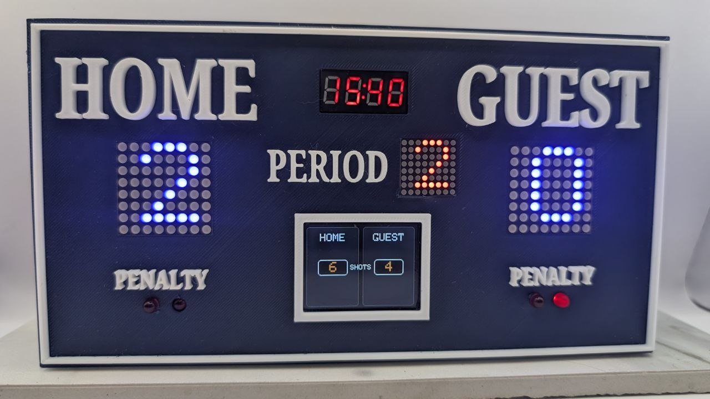
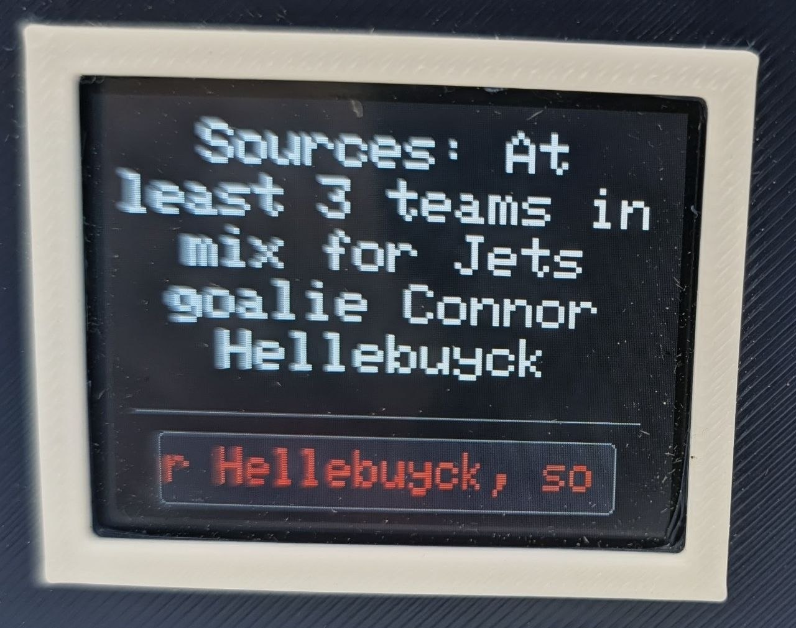

NHL Scoreboard
A live, always-on scoreboard for your team's games. Connect it to wifi and pick your teams - it does the rest.

Need help setting it up? See the getting-started guide →
What it does
Live, in real time
Score, period, shots on goal, and the penalty count update from the official NHL feed. When the puck crosses the line, the color screen flips to GOAL!!! in big orange letters and the horn fires.

Fits well on your desk or mantle
Two 8×8 LED matrices carry the score, a third shows the period, and a 4-digit display carries the game clock. No squinting at a phone. Four LEDs — two per team — light up when a team is short-handed; the color screen names who and how much time is left.

Single or multi-player hockey trivia
Hockey trivia night, run by the scoreboard. 750 questions, 15 per round — the board puts up a question, you answer A/B/C/D from your phone. Three wrong answers and you're out. Play solo against the board, or pass the phone around the room and keep score between you.

League news when there's no game
When your team's not playing — or the game's between periods — the color screen shows recent NHL headlines. It refreshes every 30 minutes and keeps your living-room wall informed without you opening a tab.

Always something on the screen
Headlines roll past on their own — trades, injuries, whatever the league is talking about. You never see the same wall twice.

60-second Wi-Fi setup
Plug it in. Join NHL_SCOREBOARD from your phone. Pick your home Wi-Fi, pick up to three followed teams, save. Done. No app, no account, no subscription. Next time it boots, it just works — and updates itself in the background.

Up to three followed teams. Battery-powered.
Set priority 1, 2, 3 — the board tracks all of them. When two of your teams are on at once, the color screen carries one and the matrices carry the other. About 3 hours on the internal battery; plug USB-C for unlimited runtime.
Updates itself
New features, schedule changes, NHL rule tweaks — they all arrive over Wi-Fi, automatically. The board checks on every reboot, downloads the newer firmware if there is one, and installs it. You don't have to do anything.

Customized colors available on request
That board is finished in orange. Yours can be finished in whatever you like — the lettering, the trim, and the colour of the LED matrices. Tell us your team's colours when you order and we'll build it to match.
What you see on the device
- Color screen2.0″ display showing team logos, score, period, clock, shots on goal, league news, active penalties
- Score digitsTwo large 8×8 LED matrices — home and away — readable across the room
- Period indicatorThird 8×8 matrix shows 1, 2, 3, OT, or SO
- Game clockBright 4-digit display; shows the current time when idle
- Penalty lightsFour LEDs — two for each team — light up while a team is short-handed. The color screen shows who has the penalties and how much time remains.
- Goal hornSounds when your team scores
- BatteryInternal, charges over USB-C, ~3 hours per charge, runs while plugged in
Specs
- Size225 mm × 120 mm × 40 mm (8.9″ × 4.7″ × 1.6″)
- PowerUSB-C, 5 V / 2 A — charge or run
- Battery life~3 hours per charge
- Wi-Fi2.4 GHz, WPA2 / WPA3. Captive-portal setup, no app required
- Followed teamsUp to 3 — pick in the setup, change any time
- Game coveragePreseason, regular season, playoffs
- Live-game update rateEvery 5 seconds while a followed game is in progress
- News headlinesESPN NHL feed, refreshed every 30 minutes
- OTA updatesAutomatic — you do nothing
Setting it up: full walkthrough →
ShopContact ussportsminiboards@gmail.com
NHL, the NHL Shield, and team logos and marks are the property of the NHL and its teams. This product is an independent, unofficial fan-made device and is not affiliated with, endorsed by, or sponsored by the National Hockey League.